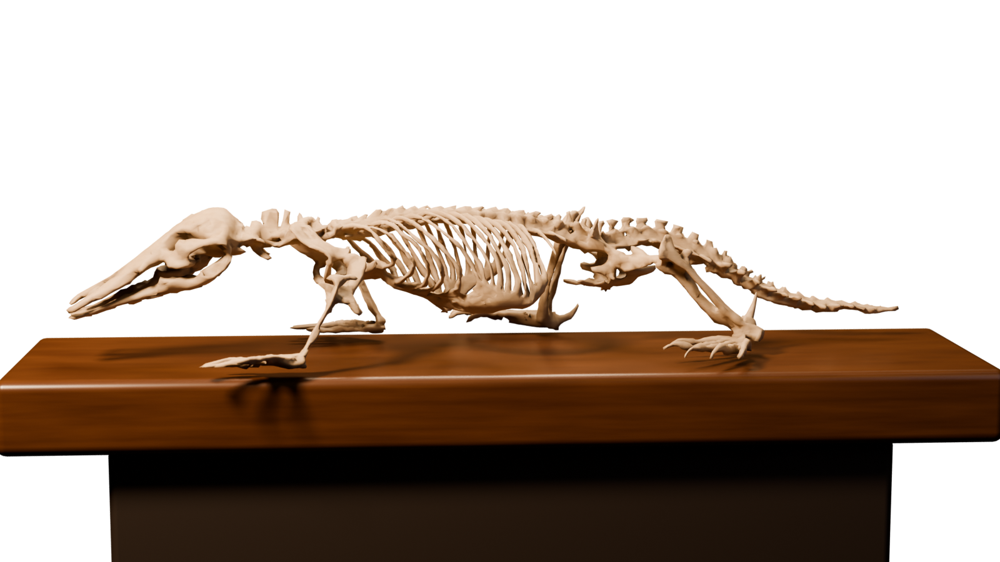

FIELD INTERFACE 01
Monotreme / scan system
LIVING · IVORY · ANATOMY
Environment hidden · lighting retained
Environment hidden · lighting retained

Preparing the museum lightLoading the specimen and its surface detail…
⠿BIO SCANNER
SURFACE / LIVE
LIVE SPECIMEN
Loading—
Pose note: The hind legs are positioned differently in the living and skeleton views. Their alignment is still being refined.
Drag to orbit. The table clears automatically when viewing underneath. Stop moving to refine the light.